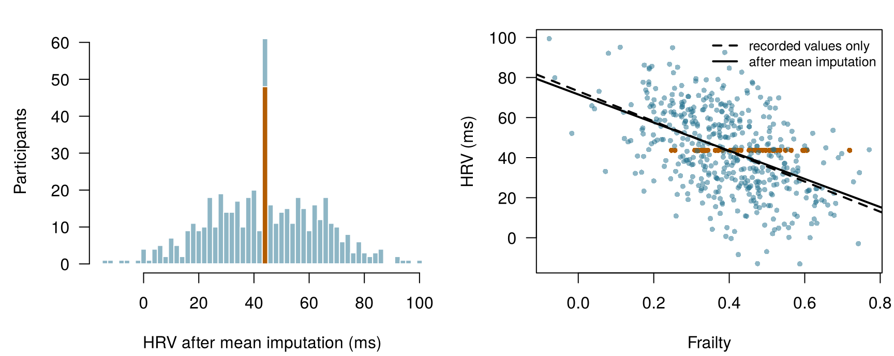
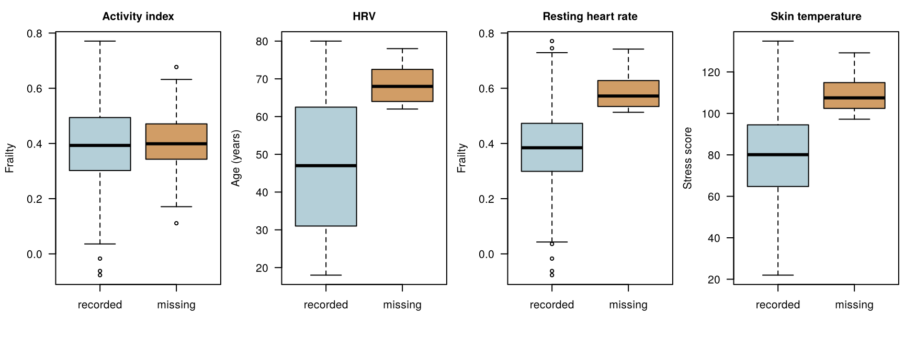
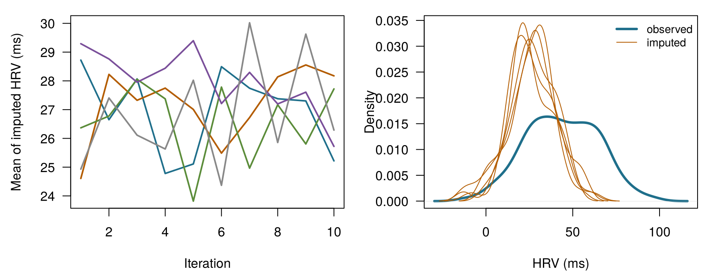
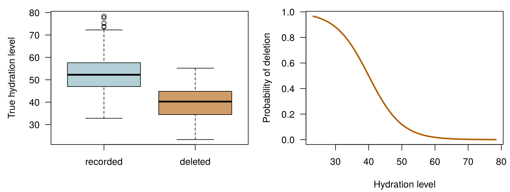

x <- c(10, 12, NA, 16)
mean(x) # R refuses: the answer is unknown[1] NAmean(x, na.rm = TRUE) # the mean of the values that were recorded[1] 12.66667Four questions to warm up. Take your best guess — every one of them is answered in the chapter.
| Question | Your answer |
|---|---|
| Four HRV readings are 10, 12, (missing) and 16 ms. What is the average of the values that were recorded? (type a number) | |
| You fill every gap in a column with the column's average. The column's standard deviation … | |
| The watch battery runs flat at moments that have nothing to do with the wearer's health. These gaps are missing … | |
| Multiple imputation fills each gap with … |
This chapter borrows a few ideas from earlier chapters. In one line each:
| Example | Who or what | Outcome | Faces you will meet |
|---|---|---|---|
| 1 Ward 7 ICU | 1 250 ICU patients in 4 hospitals | change in creatinine over 48 h (acute kidney injury if ≥ 0.3 mg/dL) | Aoife (71, sepsis, borderline risk), Tomás (54, low risk), Priya (38, high risk); Dr Emma Walsh; Seán, the pharmacist |
| 2 ONCO-1 trial | 1 000 patients randomised to chemotherapy or not | tumour shrinkage (%) | patients #0042 and #0917 |
| 3 HomeBeat | 500 people wearing a smartwatch at home | stress score, deterioration event | Lena |
| 4 CellWorks | 420 production batches of a cell therapy | potency score | batch CW-118 |
All four datasets are simulated and can be downloaded from the data appendix. The full introduction is in Section 1.1.
This chapter is about the holes in a dataset: why they appear, what the easy fixes do to your conclusions, and how to handle them honestly. It uses mainly HomeBeat (Example 3), and a version of Ward 7 (Example 1) in which some laboratory values were never recorded. It has eleven sections and a Lab, seven quick checks, three “Try it” widgets, a challenge and three coding missions in R and Python. Allow about two hours.
| Symbol | Meaning | Section |
|---|---|---|
| \(R_{ij}\) | missingness indicator: 1 if the value of feature \(j\) for instance \(i\) is observed, 0 if missing | Section 9.1 |
| \(\mathbf{D}\), \(\mathbf{D}_{\text{obs}}\), \(\mathbf{D}_{\text{mis}}\) | the whole data table, its observed part, its missing part | Section 9.4 |
| \(M\) | number of imputations (completed datasets) | Section 9.7 |
| \(\hat\theta_m\), \(\bar\theta\) | estimate from completed dataset \(m\); pooled estimate | Section 9.7 |
| \(V_W\), \(V_B\), \(V_T\) | within-imputation, between-imputation and total variance | Section 9.7 |
| \(\delta\) | shift applied to imputed values in a sensitivity analysis | Section 9.9 |
The full list is on the notation page.
Missing data are often treated as a technical nuisance, something that “just happens” and is cleaned away before the real analysis begins. Their consequences go much deeper, and the simplest statistic of all is enough to show why: the average.
Definition 9.1 (Missing value and missingness indicator) A missing value is a value that was meant to be recorded but was not: a laboratory test that was never ordered, a questionnaire item left blank, a night on which a watch recorded nothing. In R and pandas it appears as NA or NaN. For each cell of a data table we write the missingness indicator \(R_{ij} = 1\) if the value of feature \(j\) for instance \(i\) is observed and \(R_{ij} = 0\) if it is missing. The table of all the \(R_{ij}\) is the missingness pattern (Little and Rubin 2020, ch. 1).
The sample mean of \(n\) values is
\[ \bar{x} = \frac{1}{n}\sum_{i=1}^{n} x_i = \frac{x_1 + x_2 + \dots + x_n}{n} . \qquad(9.1)\]
The formula quietly assumes that every \(x_i\) exists. Take four HRV readings, 10, 12, 14 and 16 ms: their mean is \((10+12+14+16)/4 = 13\). Now suppose the third reading was never recorded. The formula asks for \((10 + 12 + {?} + 16)/4\), and it has no instruction for the question mark.
x <- c(10, 12, NA, 16)
mean(x) # R refuses: the answer is unknown[1] NAmean(x, na.rm = TRUE) # the mean of the values that were recorded[1] 12.66667R’s refusal is honest. Adding na.rm = TRUE (“remove the NAs”) gives \((10 + 12 + 16)/3 = 12.67\), but notice what changed: one value was dropped, the number of values went from four to three, and the result answers a different question — what is the average of the readings we happen to have? With the indicator \(R_i\) it reads
\[ \bar{x}_{\text{obs}} = \frac{\sum_{i=1}^{n} R_i\, x_i}{\sum_{i=1}^{n} R_i} , \qquad(9.2)\]
which estimates the mean of everybody only if the recorded readings are a fair sample of all the readings. When they are not — when, as with Lena’s watch, the low readings are the ones that go missing — \(\bar{x}_{\text{obs}}\) is biased, and no amount of extra data fixes it.
Other quick fixes fare no better. Filling the gap with zero gives \((10+12+0+16)/4 = 9.5\), a mean driven by an arbitrary choice. Filling it with the average of the other three gives back 12.67, but now looks as if it rests on four measurements when only three were made. Even for a mean, then, missing data make the answer undefined without an assumption, sensitive to the assumption chosen, and biased if the assumption is wrong. Regression models, which combine many variables, are more exposed still.
Lena’s dashboard shows the average of the HRV values her watch recorded over 30 nights. Under which condition is this a fair estimate of her average HRV over all 30 nights?
Before principled methods, it helps to see the three shortcuts that analysts most often reach for. They are popular because they are easy and look assumption-free. They are not assumption-free, and the HomeBeat data show what they do. In the version of the data the trial team actually has (homebeat_missing.csv), four wearable signals have gaps: resting heart rate (30 missing), HRV (48), skin temperature (31) and the activity index (45). Because the data are simulated, we also have the complete version (homebeat.csv) and can compare every shortcut with the truth — a luxury no real study has.
Definition 9.2 (Complete-case analysis and pairwise deletion) Complete-case analysis (also listwise deletion) keeps only the rows in which every variable used is observed. Pairwise deletion (also available-case analysis) uses, for each calculation, every row in which the variables of that calculation are observed, so different quantities rest on different subsets of rows.
Complete-case analysis is the default of most software, so it often happens silently. 134 of the 500 HomeBeat participants (27 %) have at least one gap, so a complete-case analysis of the whole table works with 366 people. The participants who are dropped are not a random slice: the mean HRV of everyone is 42.2 ms, the mean of all recorded HRV values is 43.7 ms, and the mean HRV of the complete cases is 46.4 ms. Each step away from “everyone” removes more of the low readings.
Pairwise deletion keeps more data for each calculation: the correlation of HRV with frailty uses 452 participants, that of HRV with resting heart rate 427, and that of frailty with resting heart rate 470. Each correlation describes a slightly different group of people, so together they can form a matrix that no single dataset could produce, which makes methods built on that matrix (principal components, factor analysis, some learning algorithms) fail or behave erratically (Little and Rubin 2020).
Definition 9.3 (Imputation and single imputation) Imputation replaces each missing value with a value predicted or drawn from the data. Single imputation fills every gap once — with zero, the mean, the median, a regression prediction — and then analyses the completed table as if it had been fully observed.
Single imputation with the mean makes a table look complete at a price. Figure 9.1 shows HRV after every missing value was replaced by the observed mean. The 48 filled-in participants pile up at a single value, the standard deviation falls from 21.0 to 19.9 ms, and the correlation between HRV and frailty is pulled towards zero, from -0.50 to -0.48. Zero is worse: an HRV of 0 ms is physiologically impossible, so it creates a cluster of fake extreme patients. The median behaves like the mean: more robust to outliers, but with the same spike and the same loss of spread.

All three shortcuts handle the gaps by convention rather than by reasoning about why the values are missing. Single imputation has a second, subtler flaw: it treats a guess as a measurement, so every standard error computed afterwards is too small (Little and Rubin 2020; Buuren 2018).
A colleague fills the missing HRV values with the mean and then reports a correlation between HRV and frailty. What is the most likely consequence?
Count the gaps. The HomeBeat data with missing values are loaded as hb. Fill in the blank with the function that marks each cell as missing (TRUE) or present (FALSE), so that the line counts the missing values in every column.
The function is is.na(). Applied to a data frame, it returns a table of TRUE/FALSE, and colSums() counts the TRUEs in each column.
colSums(is.na(hb))The method is .isna(); .sum() then counts the True values in each column.
hb.isna().sum()Means and correlations are only the start. Suppose the HomeBeat team wants to know how the stress score depends on frailty, HRV and resting heart rate, and fits the linear model of Chapter 4,
\[ \text{stress score} = \beta_0 + \beta_1\,\text{frailty} + \beta_2\,\text{HRV} + \beta_3\,\text{resting HR} + \varepsilon . \]
R’s lm() silently drops every participant with a gap in any of these variables, so the model uses 427 of the 500 participants. Table 9.1 compares that complete-case fit with the fit on the complete data, which in this simulation plays the role of the truth, and with mean imputation and multiple imputation, which we build later in the chapter.
| Analysis | n | Frailty | HRV | Resting HR |
|---|---|---|---|---|
| Complete data (truth in this simulation) | 500 | 11.07 (2.84) | -0.515 (0.026) | 0.679 (0.042) |
| Complete-case analysis | 427 | 9.41 (3.18) | -0.509 (0.028) | 0.708 (0.047) |
| Mean imputation | 500 | 16.81 (3.11) | -0.493 (0.027) | 0.749 (0.042) |
| Multiple imputation (M = 50) | 500 | 11.18 (2.96) | -0.505 (0.027) | 0.691 (0.044) |
The complete-case frailty coefficient is 9.41 against 11.07 in the complete data. It is tempting to read that drop as a bias: frailer participants lose their resting heart rate more often, so, the argument goes, the frailest people are under-represented and the frailty effect is underestimated. It is a natural story. Is it true?
Look at the standard errors first. A difference of 1.65 is well inside one standard error (about 3.2), so a single dataset cannot tell bias from bad luck. A simulation can. We took the complete data, deleted values again and again with exactly the same rules (HRV more often missing above age 60, resting heart rate more often missing among the frailest), refitted the complete-case model each time, and averaged (Table 9.2, scenario A). Over 200 repetitions the complete-case frailty coefficient averages 11.02 — the truth, give or take simulation noise. The drop in our one dataset was bad luck. What complete-case analysis really cost here was precision: fewer participants, larger standard errors, estimates that wander more from one deletion to the next.
| Scenario | Coefficient | Truth | Complete case | Multiple imputation |
|---|---|---|---|---|
| A | frailty | 11.07 | 11.02 (1.20) | 11.35 (0.75) |
| A | resting_hr | 0.679 | 0.672 (0.015) | 0.680 (0.012) |
| B | frailty | 11.07 | 11.04 (1.52) | 11.67 (1.22) |
| B | resting_hr | 0.679 | 0.622 (0.027) | 0.695 (0.034) |
The lesson is general, and it corrects a claim that appears in many textbooks. In a regression, complete-case analysis is unbiased whenever the chance of a row being incomplete depends only on the model’s predictors, and not on the outcome — whatever the pattern of missingness looks like (Little and Rubin 2020; White and Carlin 2010; Hughes et al. 2019). In scenario A, missingness depends on frailty, a predictor, and on age, which is not in the model; because age also affects the stress score, a small bias remains (compare resting heart rate with its truth), but it is tiny next to the spread from one deletion to the next. Scenario B is different: HRV goes missing more often when the stress score is high, so the rows that survive are selected on the outcome. Now the complete-case coefficient of resting heart rate is 0.622 against a truth of 0.679, a shift of about 2.1 spreads: a genuine bias. Multiple imputation, which uses the stress score to fill in the missing HRV values, brings it much closer, to 0.695.
Mean imputation is the clear loser in Table 9.1: it moves the frailty coefficient to 16.81, because the participants whose HRV was replaced by the average now look as if their stress were explained by frailty instead. Ignoring missing data is never a neutral choice. Whether it does harm depends on how the data went missing, which is where we turn next.
In a regression of the stress score on frailty, HRV and resting heart rate, resting heart rate is missing more often for frailer participants, and for no other reason. What does complete-case analysis do to the coefficients?
We have seen that naive methods sometimes work and sometimes fail. What decides it is the question this section is about: why did the values go missing? In statistical terms, the process that produces the gaps is itself random and has its own probability distribution. Write \(\mathbf{D}\) for the whole data table (features and outcome), split it into the part we observe, \(\mathbf{D}_{\text{obs}}\), and the part we do not, \(\mathbf{D}_{\text{mis}}\), and let \(R\) be the pattern of missingness indicators. The missingness mechanism is the probability of the pattern given the data, \(P(R \mid \mathbf{D}_{\text{obs}}, \mathbf{D}_{\text{mis}})\). Rubin (1976) distinguished three cases, which decide which analyses remain valid (Little and Rubin 2020).
Definition 9.4 (MCAR, MAR and MNAR) Data are missing completely at random (MCAR) if the probability of a gap depends on nothing in the data, observed or not: \(P(R \mid \mathbf{D}_{\text{obs}}, \mathbf{D}_{\text{mis}}) = P(R)\). They are missing at random (MAR) if, once we condition on what was observed, the probability no longer depends on the unobserved values: \(P(R \mid \mathbf{D}_{\text{obs}}, \mathbf{D}_{\text{mis}}) = P(R \mid \mathbf{D}_{\text{obs}})\). They are missing not at random (MNAR) if the probability depends on the unobserved values themselves, even after conditioning on everything observed (Rubin 1976; Little and Rubin 2020, ch. 1).
The names are confusing — “missing at random” does not mean random in the everyday sense — so it helps to tie them to Lena’s watch.
The mechanisms decide what each method can deliver. Under MCAR, complete-case analysis is unbiased though wasteful. Under MAR, the average of the recorded values is generally biased — and so is a complete-case regression if missingness depends on the outcome — but methods that model the missing values from the observed ones (multiple imputation, likelihood-based methods) remain valid, provided the variables that drive the missingness are in the model. Under MNAR, neither deletion nor standard imputation removes the bias, because the cause of the gaps is something we never see; we can only explore how much the conclusions would change under different assumptions (Section 9.9). Note that MAR does not automatically mean bias: if the variable that drives the gaps is unrelated to the variable with gaps, even the naive average stays close to the truth. Bias needs both links — from the driver to the gaps, and from the driver to the value.
Make Lena’s watch fail. Each dot is a HomeBeat participant’s true HRV. Choose why HRV goes missing, how many values are lost and how strongly the gaps depend on their cause. Three averages are compared with the truth (the mean of all 500, which only a simulation knows): the average of the recorded values, and the average after filling each gap with a regression prediction from age, frailty and baseline inflammation — all fully observed. Try MCAR, then MAR, then MNAR. Target: find a setting in which even the regression fill-in misses the truth by more than 1 ms.
Solid line: true mean. Dashed blue: mean of recorded values. Dotted orange: mean after regression fill-in.
Three patterns appear. Under MCAR both averages hover around the truth and only wobble from draw to draw. Under MAR the recorded-values average is biased upwards (older participants have lower HRV and lose more readings), while the regression fill-in, which knows each participant’s age, lands on the truth. Under MNAR both miss: age, frailty and inflammation explain part of HRV, so the fill-in recovers part of the gap, but the participants whose HRV is low for reasons not recorded stay hidden.
On Lena’s 9 missing nights, two were lost to a flat battery and seven to restless sleep that stopped the sensor locking on. How would you classify the two kinds of gap?
What is the most plausible mechanism for each gap? Assume that the variables named are recorded unless the item says otherwise.
The mechanism is an assumption about the world, but the data can still tell us a good deal. A standard diagnostic routine has three steps.
1. How much is missing, and where? Count the gaps per variable (you did this in the mission) and per row, and look at which variables tend to be missing together. In HomeBeat, 9.6 % of HRV values and 9.0 % of activity values are missing, and 27 % of participants have at least one gap.
2. Do participants with and without a gap differ on what we can see? Compare, for each variable with gaps, the distribution of the fully observed variables between the two groups (Figure 9.3). Participants with and without an activity value have almost the same frailty (mean 0.397 against 0.396), as MCAR predicts. Participants missing HRV are older (mean age 68.4 against 47.3); those missing resting heart rate are frailer; those missing skin temperature have higher stress scores. Each of these rules out MCAR for that variable.

3. Model the indicator. A logistic regression with the missingness indicator as outcome (Chapter 5) shows which observed variables predict a gap, adjusting for the others:
glm(is.na(resting_hr) ~ frailty, data = hm, family = binomial)
Call: glm(formula = is.na(resting_hr) ~ frailty, family = binomial,
data = hm)
Coefficients:
(Intercept) frailty
-9.915 14.560
Degrees of Freedom: 499 Total (i.e. Null); 498 Residual
Null Deviance: 227
Residual Deviance: 157.1 AIC: 161.1The log-odds of a missing resting heart rate rise by 1.5 for every 0.1 increase in frailty: a strong, systematic link. More formal checks exist, such as Little’s test of MCAR (Little 1988a), but none of them is a verdict, for a reason worth stating plainly: the data cannot distinguish MAR from MNAR. Every diagnostic compares things we observe; MNAR is about the values we do not observe. The shifted boxes in Figure 9.3 show that missingness depends on something observed. They cannot show that it depends on nothing else. That judgement comes from knowing how the data were collected — the device, the clinic, the patients — which is why the people who collected the data must be part of the analysis.
In HomeBeat, the logistic regression of the HRV missingness indicator on age, frailty, stress and the other observed variables fits well. Which conclusion is justified?
The Ward 7 records have gaps too. In icu_aki_missing.csv, a version of the Ward 7 data made for this chapter, albumin is missing for 7 % of patients, lactate for 21 % and baseline creatinine for 22 %; 529 of the 1 250 patients have at least one gap. The deletion script, sim_ward7_missing.R, documents the mechanisms, and you are invited to diagnose them before reading it.
Who goes without a lactate? The Ward 7 data with gaps are loaded as icu. Fill in the blank so that the line compares the mean SOFA score of patients whose lactate is recorded (FALSE) and missing (TRUE).
The SOFA score is in the column sofa.
tapply(icu$sofa, is.na(icu$lactate), mean)The SOFA score is in the column "sofa".
icu.groupby(icu["lactate"].isna())["sofa"].mean()Patients without a lactate have a mean SOFA of 4.5, against 7.8 for the others: lactate is ordered less often for patients who look well. In these simulated data lactate itself is unrelated to SOFA, so the observed mean lactate is barely affected — a reminder that MAR leads to bias only when the cause of the gaps is also related to the value. Baseline creatinine is a different story, to which we return in Section 9.10.
Once the mechanism has been thought through, the next practical question is the amount. Analysts often look for a threshold — impute below 5 %, worry above 20 %, discard above 50 % — and such conventions are widespread. They are rough guides, not rules (Madley-Dowd et al. 2019), and three points matter more than any cut-off.
Every principled method treats missing values for what they are: unknown quantities with a probability distribution, given what was observed. The more is missing, the wider that distribution, and the more uncertainty must be carried into the final result. That is exactly what multiple imputation is designed to do.
Single imputation fails because it pretends to know what it does not. Multiple imputation (MI) replaces each missing value not with one best guess but with several plausible values, each drawn from a model of how the missing value relates to what was observed (Rubin 1987). The missing values become what they really are: uncertain quantities with a distribution — the same view of unknowns that runs through the Bayesian chapter of this book (Chapter 8).
Definition 9.5 (Multiple imputation) Multiple imputation creates \(M\) completed copies of a dataset, in each of which every missing value is replaced by a random draw from its predictive distribution given the observed data. The analysis of interest is run separately on each copy, and the \(M\) results are combined with Rubin’s rules into one estimate whose uncertainty includes the uncertainty about the missing values.
Multiple imputation has three steps (Figure 9.4).
Suppose analysis \(m\) gives an estimate \(\hat\theta_m\) (say, the frailty coefficient) with squared standard error \(\widehat{\mathrm{SE}}_m^2\). Rubin’s rules (Rubin 1987; Little and Rubin 2020) combine them in four lines:1
1 Rubin writes \(\bar Q\), \(\bar U\), \(B\) and \(T\). We use \(\bar\theta\) and \(V_W, V_B, V_T\) because \(B\) and \(T\) already mean the number of bootstrap samples and a tree in Chapter 6.
\[ \begin{aligned} \bar\theta &= \frac{1}{M}\sum_{m=1}^{M}\hat\theta_m && \text{pooled estimate}\\ V_W &= \frac{1}{M}\sum_{m=1}^{M}\widehat{\mathrm{SE}}_m^2 && \text{within-imputation variance}\\ V_B &= \frac{1}{M-1}\sum_{m=1}^{M}\left(\hat\theta_m - \bar\theta\right)^2 && \text{between-imputation variance}\\ V_T &= V_W + \left(1 + \frac{1}{M}\right) V_B && \text{total variance} \end{aligned} \qquad(9.3)\]
The pooled standard error is \(\sqrt{V_T}\). Each term has a plain meaning. \(V_W\) is the uncertainty we would have even with no missing data: the ordinary sampling variability, averaged over the completed datasets. \(V_B\) is the extra uncertainty because values are missing: if the imputations disagree a lot, the missing values matter a lot. The factor \(1 + 1/M\) corrects for using a finite number of imputations. The share of the total variance due to missingness, \((1 + 1/M)V_B / V_T\), approximates the fraction of missing information about \(\theta\).
Confidence intervals use a \(t\) distribution with degrees of freedom \(\nu = (M-1)\left[1 + V_W/\big((1 + 1/M)V_B\big)\right]^2\), so few imputations and much missing information give wider intervals; software such as mice applies a small-sample refinement of this formula (Barnard and Rubin 1999).
Definition 9.6 (Rubin’s rules) Rubin’s rules pool the results of \(M\) analyses of multiply imputed data: the pooled estimate is the average of the \(M\) estimates, and its variance is the average within-imputation variance plus \((1 + 1/M)\) times the variance between the estimates (Equation 9.3).
For the frailty coefficient in the first five HomeBeat imputations, the estimates average \(\bar\theta =\) 11.19, the within-imputation variance is \(V_W =\) 8.26 and the between-imputation variance \(V_B =\) 0.60, so \(V_T =\) 8.26 \(+ (1 + 1/5) \times\) 0.60 \(=\) 8.98 and the pooled standard error is 3.00. About 8 % of the variance is due to the missing values. With all 50 imputations, the fraction of missing information is about 6 % for frailty and 8 % for resting heart rate, which itself has gaps.
How many imputations? Early advice said three to five were enough for a good point estimate (Rubin 1987); for stable standard errors and \(p\)-values, White, Royston, and Wood (2011) suggest at least as many imputations as the percentage of incomplete cases. In HomeBeat that is 27 %, so \(M \ge\) 27.
Pool it yourself. The dots are the estimates of one coefficient from \(M\) completed HomeBeat datasets (made with mice, M up to 50), each with its own 95 % interval. The bar at the top is the pooled result from Rubin’s rules; the vertical line is the estimate from the complete data, which only a simulation knows. Switch the between-imputation variance off to see what single imputation would claim. Target: set \(M\) to at least the percentage of incomplete cases (27), with \(V_B\) included.
Two things to notice. With \(V_B\) switched off the pooled interval shrinks — that is the false confidence of single imputation. And as \(M\) grows, the pooled estimate and its interval stop jumping around: more imputations do not add information about the missing values, but they make the Monte Carlo part of the answer stable.
In Rubin’s rules, why is the total variance \(V_T\) larger than the average within-imputation variance \(V_W\)?
Rubin’s rules by hand. The frailty estimates and standard errors from the first five HomeBeat imputations are loaded as est and se. Complete the line that computes the total variance; the last line returns the pooled standard error.
Look at the last line of Equation 9.3: \(V_T = V_W + (1 + 1/M)\,V_B\).
VT <- VW + (1 + 1/M) * VB # total varianceLook at the last line of Equation 9.3: \(V_T = V_W + (1 + 1/M)\,V_B\).
VT = VW + (1 + 1/M) * VB # total varianceWhy does it work? Each completed dataset is one plausible version of the full data. No single imputed value is trusted, but across the copies the spread of the imputed values — and therefore of the estimates — reflects how uncertain we are about them. Compared with complete-case analysis, MI uses every participant’s observed values, which gains precision, and it removes the bias that arises when missingness depends on the outcome or on variables outside the analysis model, as long as those variables are in the imputation model. Compared with single imputation, MI restores the spread of the data, keeps correlations intact and gives standard errors that admit what is not known. Both properties rest on the MAR assumption (or MCAR) and on a sensible imputation model (Sterne et al. 2009; Buuren 2018).
How do we draw plausible values for several variables with gaps at once? The most widely used answer is multiple imputation by chained equations (MICE), also called fully conditional specification, implemented in the R package mice (Buuren and Groothuis-Oudshoorn 2011; Buuren 2018).
Definition 9.7 (MICE (chained equations)) MICE imputes several incomplete variables by cycling through them: each variable with gaps is imputed from a regression model on all the other variables, using the current imputed values of the others, and the cycle is repeated a number of times (iterations) until the imputations stabilise. Running \(M\) independent chains gives \(M\) completed datasets.
In HomeBeat, one cycle imputes resting heart rate from the other variables, then HRV from the others (including the freshly imputed resting heart rate), then skin temperature, then the activity index; ten cycles are usually ample for data like these. The model for each variable is chosen by its type. For continuous variables the default is predictive mean matching.
Definition 9.8 (Predictive mean matching (PMM)) Predictive mean matching imputes a missing value by (1) predicting it with a regression whose coefficients are drawn to reflect their uncertainty, (2) finding a few observed participants whose predictions are closest, and (3) copying the actual observed value of one of them, chosen at random. Imputed values are therefore always values that really occur in the data (Little 1988b).
PMM is robust: it cannot produce an impossible HRV of −5 ms, and it keeps the shape of skewed distributions (Buuren 2018). The whole analysis takes a few lines. (The mice package does not run in the browser, so this chunk is shown rather than run; its results were computed when the book was built, by ch09_mice.R.)
library(mice)
hm <- read.csv("data/homebeat_missing.csv")
vars <- c("age", "baseline_inflammation", "frailty", "resting_hr", "hrv",
"skin_temp", "activity_index", "stress_score", "event_occurred")
imp <- mice(hm[, vars], m = 50, method = "pmm", maxit = 10, seed = 2025)
plot(imp) # trace plots: have the chains mixed?
densityplot(imp, ~ hrv) # imputed (red) against observed (blue) values
fit <- with(imp, lm(stress_score ~ frailty + hrv + resting_hr)) # analyse each copy
summary(pool(fit), conf.int = TRUE) # Rubin's rulesTwo decisions in this code deserve attention. The identifier is left out, because it carries no information. And the outcome, stress_score, is in the imputation model. This surprises many people — is it not circular? It is not: leaving the outcome out would impute HRV as if it were unrelated to stress, and would bias the HRV coefficient towards zero. The imputation model should contain every variable in the analysis model, the outcome included, plus auxiliary variables that predict the gaps or the missing values (White, Royston, and Wood 2011; Sterne et al. 2009).
Before trusting the result, look at two diagnostics (Figure 9.5). The trace plot follows the mean of the imputed values in each chain across iterations: the chains should intermingle without a trend. The density plot compares imputed with observed values; under MAR they need not be identical — here imputed HRV values are lower, because the participants who lost them are older — but they should be plausible.

The pooled results are in the last row of Table 9.1. The coefficients are close to the complete-data truth, with standard errors between those of the complete data and those of the complete-case analysis: MI recovered some, not all, of the information lost to the gaps. Do not read too much into how close one dataset comes to the truth; as Table 9.2 showed, the fair comparison is over many repetitions.
PMM is a robust default for continuous variables, but the method argument of mice() can be set separately for each variable (Buuren and Groothuis-Oudshoorn 2011; Buuren 2018):
| Method | Variable type | What it does |
|---|---|---|
"pmm" |
continuous (any numeric) | predictive mean matching: copies an observed value from a donor with a similar prediction |
"norm" |
continuous, roughly normal | Bayesian linear regression: draws the coefficients and residual variance from their posterior, then adds random noise |
"norm.nob" |
continuous | linear regression with random noise but without drawing the coefficients; understates uncertainty |
"norm.boot" |
continuous | linear regression refitted on a bootstrap sample, then noise added |
"norm.predict" |
continuous | the regression prediction itself, no noise: a single deterministic imputation that shrinks variance; for teaching or as a baseline only |
"logreg" |
binary (two-level factor) | logistic regression |
"polyreg" |
unordered categories | multinomial logistic regression |
"polr" |
ordered categories | proportional-odds model, which respects the order |
"cart", "rf" |
any | classification and regression trees, random forests (Chapter 6); capture interactions and non-linearity |
"2l.norm", "2l.pan", "2l.lmer" |
continuous, clustered | multilevel models, for repeated measures within participants or patients within hospitals |
"~ I(...)" |
derived variable | passive imputation: recomputes a variable from others at each iteration |
Passive imputation keeps derived variables consistent. If body-mass index is computed from weight and height, impute weight and height and let mice recompute BMI each time, with method["bmi"] <- "~ I(weight / (height / 100)^2)", instead of imputing BMI separately and risking impossible combinations. For HomeBeat’s nightly readings — many nights per participant — a multilevel method would be the natural next step, because readings from the same person are more alike than readings from different people.
Everything so far assumed MAR. Lena’s watch does not oblige: its gaps fall on her worst nights. To see what happens then, we add to HomeBeat a fictitious marker, hydration_level (mean 50, standard deviation 10), and delete its values with a probability that rises as hydration falls — a textbook MNAR mechanism, unrelated to any other variable. About 20 % of values go missing (Figure 9.6).

The mean of the recorded values is 52.6, against a true mean of 49.9. Now run multiple imputation exactly as before, under MAR. The pooled mean is 52.5: no better than the naive average. MI could not help, because nothing observed is related to hydration; under MAR it fills the gaps with values like the observed ones, which are the wrong values. Imputing such a variable together with the others, as if it were MAR, is a common and silent error: with real data we would not know the true mean, so we would not even see the failure.
What can be done? Since the data cannot reveal the MNAR mechanism, the honest approach is a sensitivity analysis: ask how much the conclusion changes under a range of plausible departures from MAR (Carpenter and Kenward 2013; Buuren 2018).
Definition 9.9 (Sensitivity analysis (δ-adjustment)) A sensitivity analysis repeats an analysis under different assumptions to see whether the conclusion holds. In the δ-adjustment approach to MNAR, values are imputed under MAR and then shifted by an amount \(\delta\) (“missing values are on average \(\delta\) units lower than observed values that are otherwise similar”); the analysis is repeated over a range of \(\delta\) chosen with people who know the data, and the results are reported side by side.
How far from MAR? Each value of \(\delta\) shifts every imputed hydration value by that amount before pooling (20 imputations, precomputed with mice’s post argument). Move \(\delta\) and watch the pooled mean and its 95 % interval. Then reveal the truth, which in real life you would never see.
Dashed line: mean of the recorded values. Blue band: 95 % interval of the pooled mean.
Here the truth is reached at about \(\delta =\) -13: the deleted values were much lower than the recorded ones. In a real study the analyst would present the whole curve and ask the clinical team which shifts are plausible. If the conclusion survives every plausible \(\delta\), it is robust to the MNAR worry; if it flips within the plausible range, the data cannot settle the question, and that too is worth knowing. More formal MNAR models exist — selection models, which model the probability of a gap as a function of the missing value, and pattern-mixture models, which model the data separately for each missingness pattern — and mice offers some of them, but all rest on assumptions that the data cannot check (Little and Rubin 2020; Carpenter and Kenward 2013).
For Lena, the lesson is practical. Her dashboard average treats the gaps as if they were MCAR, in a situation that is probably MNAR. If her HRV on restless nights is even somewhat lower than on the nights recorded, her true average is lower than the dashboard shows — and seven bad nights in a month are a signal in their own right. The nurse should call.
Most of this chapter concerned inference: estimating a mean or a coefficient without bias, with honest uncertainty. Prediction models — the risk scores of Part II — change the priorities, and three points follow (Sperrin et al. 2020).
The Ward 7 baseline creatinine shows all three. In the deletion script, a baseline creatinine exists only if the patient had a blood test before admission, which healthier people rarely have: the gap depends on the unseen value itself (MNAR). The recorded values average 1.15 mg/dL against a true 1.07 mg/dL. The Lab below fits a prediction model with training-set mean imputation and missing indicators, on the shared Ward 7 split and with the ten predictors (P10, site included) used for Ward 7 since Chapter 4, and you will see that the indicator for a missing baseline creatinine picks up some of the information that the gap itself carries.
The gaps were deleted from the same 1 250 Ward 7 patients, so models fitted to the gappy data can join the comparison of the earlier chapters (Table 9.4; this chapter’s rows in bold): fitted on the same 1 000 training patients, now with gaps, and tested on the same 250 test patients, gaps included. With complete data, the linear regression (OLS) of Chapter 4 has a test MAE of 0.141 mg/dL. With the gaps, training-mean imputation with missing indicators gives 0.144, and multiple imputation (mice, 20 imputations, imputation model fitted on the training rows only) gives 0.147. The gaps cost little: mean imputation with indicators still does better than the random forest (0.153) and XGBoost (0.148) of Chapter 6 and BART (0.146, Chapter 8), all fitted to complete data, and multiple imputation falls between BART and XGBoost. That multiple imputation, the better method for inference, predicts slightly worse here is no paradox: imputing under MAR, it has no way to use the information that a missing baseline creatinine carries, which the indicator captures.
A complete-case model is not in the table, because it cannot be scored on the same patients. Fitted on the 553 training patients without a gap, it can predict for only 168 of the 250 test patients and is silent for the other 82. On those 168 patients its MAE is 0.140, but on the same 168 patients the imputation model scores 0.140 and the complete-data OLS model 0.141: the complete-case model is about as accurate, only less available.
| Chapter | Model | Predictors | CV MAE | Test MAE | Test RMSE | Test R² |
|---|---|---|---|---|---|---|
| 1 | Training mean (no model) | none | 0.241 | 0.236 | 0.297 | 0.000 |
| 1 | Linear regression on SOFA only | SOFA | 0.196 | 0.191 | 0.237 | 0.363 |
| 3 | Linear regression, two predictors (teaching set) | P2 | 0.176 | 0.171 | 0.213 | 0.485 |
| 3 | kNN regression, k = 15, standardised (teaching set) | P2 | 0.179 | 0.176 | 0.217 | 0.467 |
| 3 | kNN regression, k = 22 by CV, standardised | P10 | 0.172 | 0.168 | 0.206 | 0.517 |
| 4 | Linear regression (OLS) | P10 | 0.147 | 0.141 | 0.174 | 0.656 |
| 4 | Ridge regression (λ min) | P10 | 0.147 | 0.141 | 0.174 | 0.657 |
| 4 | Ridge regression (λ 1-SE) | P10 | 0.151 | 0.143 | 0.175 | 0.651 |
| 4 | Lasso (λ min) | P10 | 0.147 | 0.141 | 0.174 | 0.657 |
| 4 | Lasso (λ 1-SE) | P10 | 0.152 | 0.144 | 0.177 | 0.643 |
| 4 | Elastic net (α = 1.0, λ min) | P10 | 0.147 | 0.141 | 0.174 | 0.657 |
| 4 | Elastic net (α = 1.0, λ 1-SE) | P10 | 0.152 | 0.144 | 0.177 | 0.643 |
| 6 | Regression tree, pruned by the 1-SE rule (rpart) | P10 | 0.194 | 0.186 | 0.231 | 0.396 |
| 6 | Regression tree, grown large (rpart, cp = 0.001) | P10 | 0.201 | 0.195 | 0.248 | 0.304 |
| 6 | Bagged regression trees (500 trees) | P10 | 0.165 | 0.156 | 0.195 | 0.568 |
| 6 | Random forest (500 trees) | P10 | 0.165 | 0.153 | 0.191 | 0.587 |
| 6 | XGBoost (152 rounds, number chosen by 5-fold CV) | P10 | 0.157 | 0.148 | 0.184 | 0.614 |
| 7 | Neural network, MLP 32-16 (scikit-learn, 30 epochs) | P10 | 0.171 | 0.161 | 0.205 | 0.522 |
| 8 | Bayesian linear regression (rstanarm) | P10 | 0.147 | 0.141 | 0.174 | 0.656 |
| 8 | BART, 50 trees (pymc-bart) | P10 | — | 0.146 | 0.182 | 0.626 |
| 9 | Linear regression after training-mean imputation + missing indicators (icu_aki_missing) | P10 + 3 missing indicators | 0.151 | 0.144 | 0.179 | 0.636 |
| 9 | Linear regression after multiple imputation (mice, m = 20; icu_aki_missing) | P10 | 0.151 | 0.147 | 0.181 | 0.629 |
You are building a Ward 7 AKI risk model and want to impute missing albumin with mice before splitting the data into training and test sets, “to use all the information”. What is the problem?
This chapter sits at the very start of the loop, where data become the raw material of a model. Data with gaps (Section 9.1) are not a smaller version of the complete data; they are a selected version, and the selection rule — MCAR, MAR or MNAR (Section 9.4) — decides whether the information a model returns is trustworthy. What can go wrong? A dashboard average that silently drops the worst nights (Lena); a complete-case regression selected on the outcome (Section 9.3); single imputation that understates uncertainty (Section 9.2); an imputation fitted on the test set (Section 9.10); and above all an MNAR mechanism treated as MAR (Section 9.9). Who stays in control? The people who know how the data were collected: they judge which mechanism is plausible and which range of \(\delta\) is credible, and the decision-makers then see a range of answers instead of a single, falsely precise number. For the decision itself, the gaps are evidence too: a watch that stops recording on bad nights is telling the nurse something.
The Lab gathers the chapter’s code in one place and ends on the running example: diagnose the gaps in the Ward 7 data, then build a prediction model that handles them without leakage (in Python with scikit-learn’s SimpleImputer (Pedregosa et al. 2011)), on the shared training/test split. Run it here, or download it and run it on your computer: ch09_lab.R · ch09_lab.py.
Three observations to take forward. The complete-case model can produce a prediction for only 168 of the 250 test patients — at the bedside it would be silent for anyone with a gap — and on those 168 it is about as accurate as the others (MAE 0.140, against 0.140 for the imputation model on the same patients). Training-set mean imputation with indicators predicts for everyone, and its test MAE on all 250 patients, 0.144, is close to the 0.141 of the model fitted to the complete data (Table 9.4), because in a prediction model the goal is accuracy, not unbiased coefficients. And the indicator for a missing baseline creatinine has a clearly negative coefficient (-0.085 mg/dL): the gap itself tells the model that the patient was probably healthy before admission — useful here, and a reason to watch for changes in testing practice when the model moves to a new hospital.
stress_score belongs in the imputation model for HRV even though it is the outcome of the analysis.1. The mean of 48, 52 and 61 is 53.7 mmol/mol. The missing values might be higher if people with poorly controlled diabetes miss clinic appointments (MNAR if it depends on the HbA1c itself; MAR if it is fully explained by recorded variables such as previous HbA1c); lower if well-controlled people are tested less often (same reasoning).
3. Yes: older participants lose more readings and have lower HRV, so the recorded average is too high. But a regression of HRV on age fitted to complete cases has an unbiased slope, because missingness depends only on the predictor (age); it is merely less precise.
4. \(\bar\theta = 11.27\); \(V_W = (2.9^2 + 3.0^2 + 2.8^2)/3 = 8.42\); \(V_B = [(10.2 - 11.27)^2 + (11.5 - 11.27)^2 + (12.1 - 11.27)^2]/2 = 0.94\); \(V_T = 8.42 + (4/3)(0.94) = 9.67\), so the pooled standard error is 3.11; the fraction of missing information is \((4/3)(0.94)/9.67 \approx 0.13\).
6. Imputation should preserve the relationships the analysis will look at. If the outcome is left out, imputed HRV values are drawn as if HRV had nothing to do with stress, so in the completed data the HRV–stress association is diluted and the HRV coefficient is biased towards zero. Including the outcome is not circular: it only makes the imputed values consistent with the observed relationship.
7. From the widget, the pooled mean falls from about 52.5 at \(\delta = 0\) to about 51.5 at \(\delta = -5\). The lower end of the interval at \(\delta = -5\) is 50.7: the point estimate stays above 51 across the whole range, but at its edge the interval no longer excludes values below 51, so the claim is not secure. If the team thinks larger shifts are possible, it fails.
| Idea from this chapter | Where it returns |
|---|---|
| Lena’s missing watch data | Chapter 11 (clustering HomeBeat phenotypes with incomplete signals) |
| Missing indicators and informative missingness | Chapter 12 (what explanations reveal about a model’s shortcuts) |
| MAR vs MNAR as untestable assumptions | Chapter 13 (causal assumptions that the data cannot check) |
| Uncertainty that propagates to the decision | Chapter 18 (when an assistant should say “not enough information”) |
Next: HomeBeat records many signals for every participant, and Ward 7 many measurements for every patient. Chapter 10 asks what happens to distances and patterns when the number of features grows, and how to see structure in many dimensions.